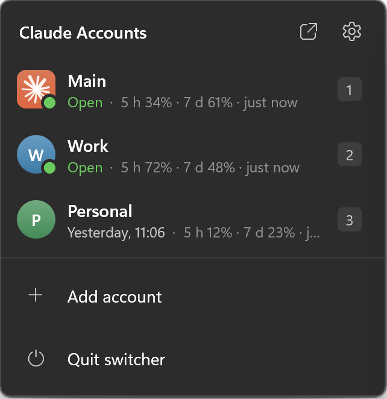
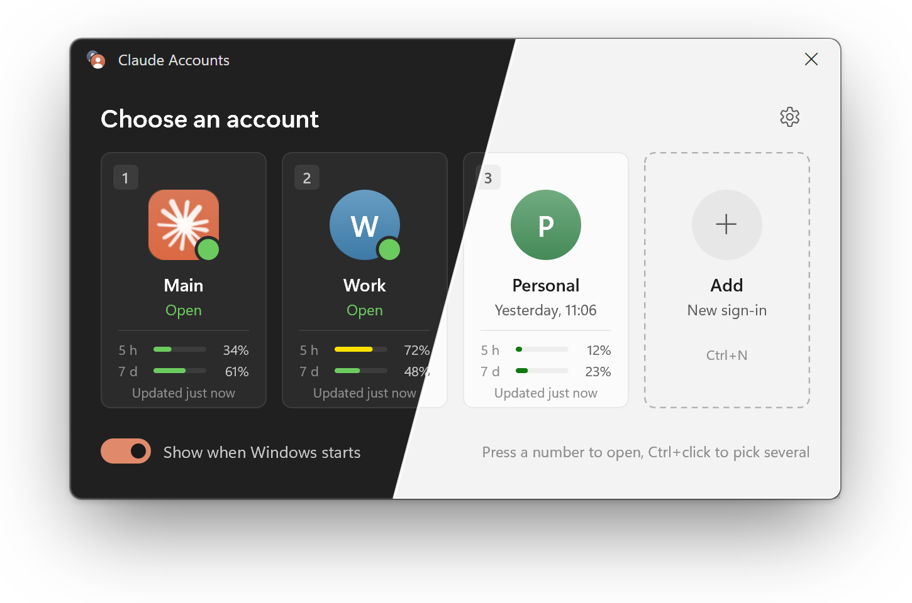

Usage at a glance
Every card shows how much of the 5-hour and 7-day limits that account has used, so you open the one with room left.
Claude Profile Switcher runs each Claude Desktop account in its own window on Windows. Press Ctrl+Alt+C, pick one, and it opens already signed in.
Free and open source Windows 10 and 11 x64 and ARM64 550 KB
Choose an account
It starts with Windows, waits in the tray and answers to two shortcuts. These are the switcher’s real settings, so go ahead and try them.
Settings
Startup
Start with Windows
The switcher starts when you sign in and waits in the tray
Ask at sign-in
Asks which account to open. Without it, the accounts ticked below open silently
Open at sign-in
These accounts open on their own. With Ask at sign-in on, a countdown runs first and can be stopped
Countdown
How long to wait before opening the ticked accounts
Quick access
Shortcut
Brings up the account picker from any app
Ctrl + Alt + number opens an account
Ctrl + Alt + 1 opens the first account, Ctrl + Alt + 2 the second, and so on. Works from any app
Window
Separate taskbar buttons per account
Each account gets its own button and icon instead of sharing Claude’s. Experimental
Work and personal, a client’s account, a team plan. Each one a click or a key away, and you always see which is which.
Every card shows how much of the 5-hour and 7-day limits that account has used, so you open the one with room left.
Click the tray icon for every account and its usage.

Ctrl+click the cards, then open them all with one button.
Shortcuts, the jump list and taskbar buttons carry each account’s badge.
Mica, rounded corners, dark and light themes that follow the system. English and Russian.

One 550 KB exe in C++ and Direct2D. No .NET, no Electron, no PowerShell, nothing to start before it.
| Name | Window appears in | Memory | What you run |
|---|---|---|---|
| Claude Profile Switcher 1.0 | 75 ms | 16 MB | One 550 KB exe, x64 or ARM64 |
| Claude Code Desktop Switcher 2.0 | about 10 s | about 126 MB | A .ps1 script through PowerShell |
Measured on the same Windows 11 PC with three accounts: time from starting the program to a visible window, and private memory once it settles.
The switcher only starts Claude with a different folder. It never sees what happens inside.
Read the security notesNo network access
There is no networking code at all: no telemetry, no update check.
Sign-ins are never touched
Tokens, cookies and passwords are not read or copied. Each account signs in by itself.
Claude is not modified
Only standard Electron and Windows mechanisms. No patching, no proxy.
No admin rights
Everything goes into your user profile. Releases are built by GitHub Actions, with SHA-256 checksums.
Claude Desktop keeps its sign-in, chats and settings in one data folder. Pointed at another folder, it is another account, running next to the first.
Switcherwindow, tray, shortcuts
Claude, Mainstarted like the Start menu does
Claude’s own data, never touchedClaude, Work--user-data-dir
%LOCALAPPDATA%\ClaudeProfiles\WorkClaude, Personal--user-data-dir
%LOCALAPPDATA%\ClaudeProfiles\PersonalFree, open source, MIT licensed. One exe that installs itself.
Download for x64Version 1.0.0 Needs Windows 10 or 11 and Claude Desktop All releases